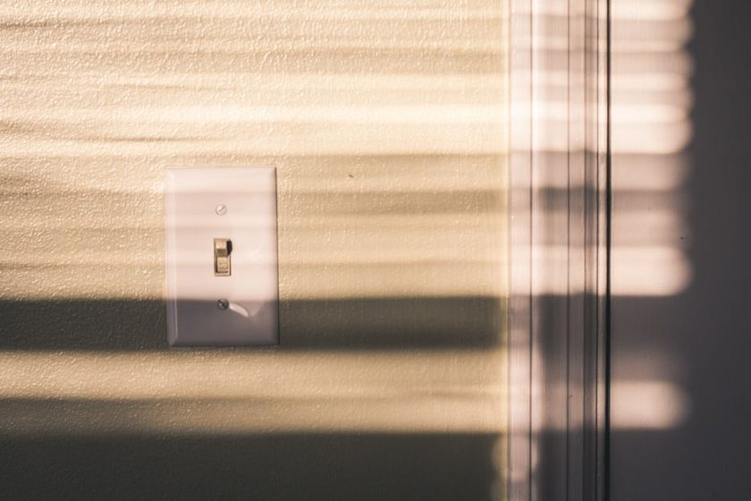
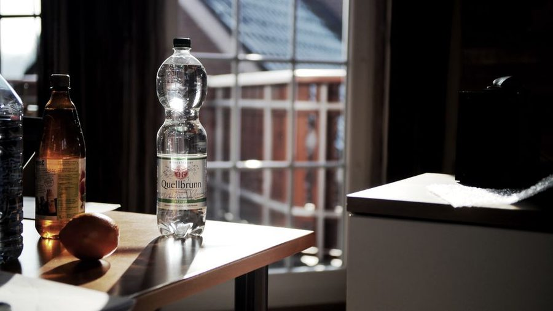
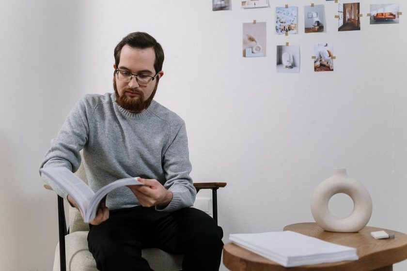
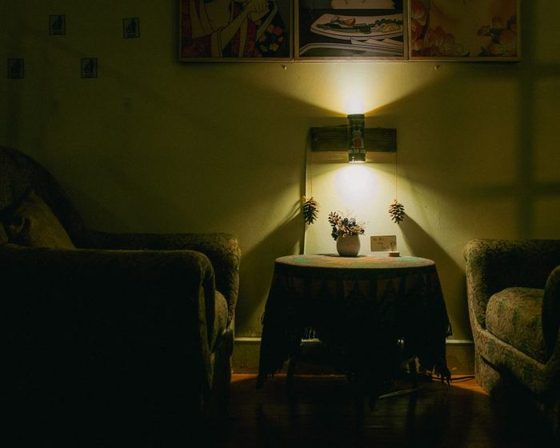
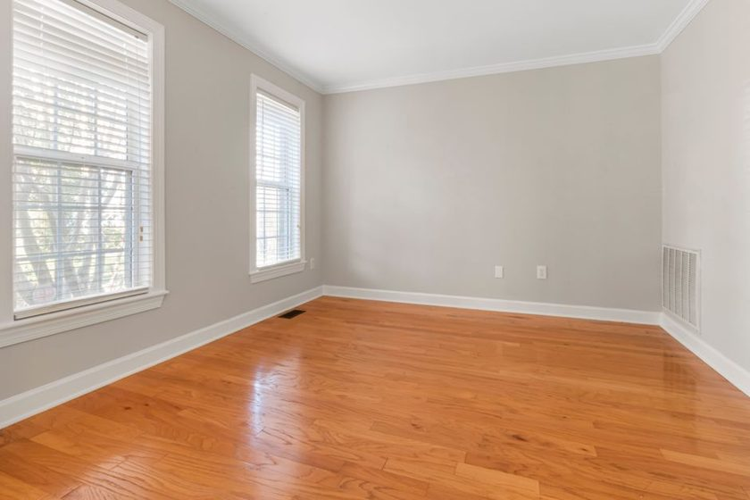

Some days feel wide open. Most feel like they happened to us.
Quiet Routine writes about the small, low-noise habits — a slow first hour, one task at a time, real silence, a book made of paper — that seem to change which kind of day you get. No hacks, no hustle. Just a closer look at the ordinary.
Read the essaysRecent essays
Short, close-in pieces about attention and the shape of a day — written slowly, meant to be read the same way.
-
01

The Case for a Slow First Hour
What changes when the first sixty minutes of the day are not spent answering anything.
-
02

What Single-Tasking Actually Feels Like
Not a productivity hack — a description of what it's like to do one thing at a time, on purpose.
-
03
Attention Residue: Why Switching Tasks Costs More Than You Think
A little of the last task always stays behind. This is what that residue does to the next hour.
-
04

In Praise of a Quiet House
On rooms without a soundtrack, and what the mind does when nothing is filling the silence.
-
05

Reading on Paper, Again
Returning to a physical book after a long stretch of screens, and noticing what is different about the attention it asks for.
-
06

The Small Ritual That Closes a Day
A short, repeatable gesture at day's end, and why a day without one tends to just trail off.
-
07

Ultradian Rhythm and the Myth of the Long Push
The body seems to work in waves of roughly ninety minutes. Most schedules ignore this entirely.
-
08

A Room With Less in It
On sensory load, and how a room can quietly compete for attention before a single task begins.
-
09
The Unhurried Commute
Turning the gap between home and work into a transition instead of a delay.
Stillhour — a quiet companion for the parts of the day you protect
Stillhour is a small app for marking off quiet hours, running simple focus timers, and closing the day with a short wind-down prompt. Built by the same people who write here, for the same reason.
Quiet Hours
Block off a window where notifications wait.
One-Task Timer
A plain timer for a single task, nothing else.
Wind-Down Prompt
A short evening cue to close the day on purpose.
Paper Log
A minimal, private log — no feed, no streaks to chase.
About this journal
Quiet Routine started as a set of private notes about why some ordinary days felt spacious and others felt like they'd been spent before they started. It's now a small, independent essay journal about attention, pace, and the unglamorous rituals — a slow first hour, a closed laptop, a paper book — that seem to make the difference. Read more on the about page.